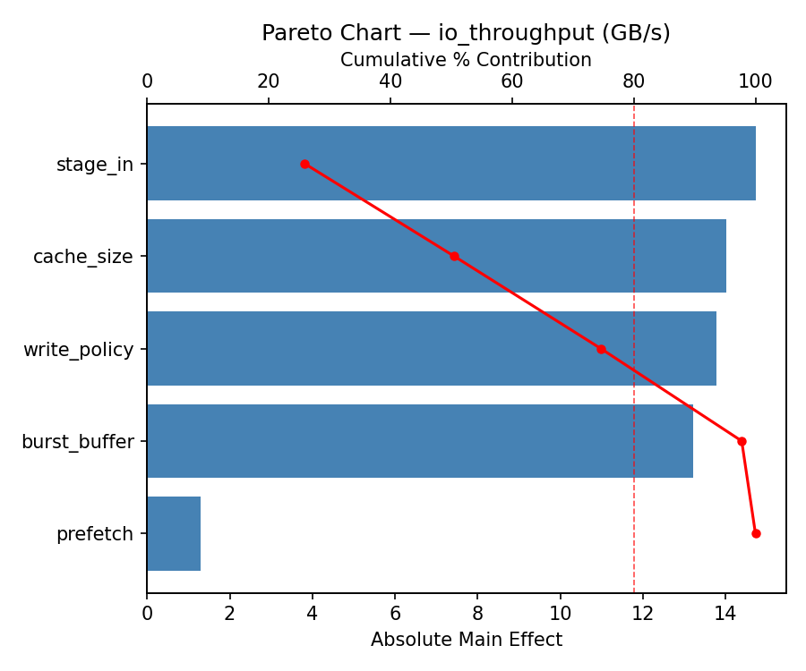
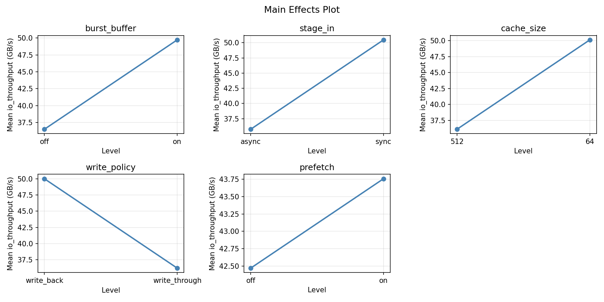
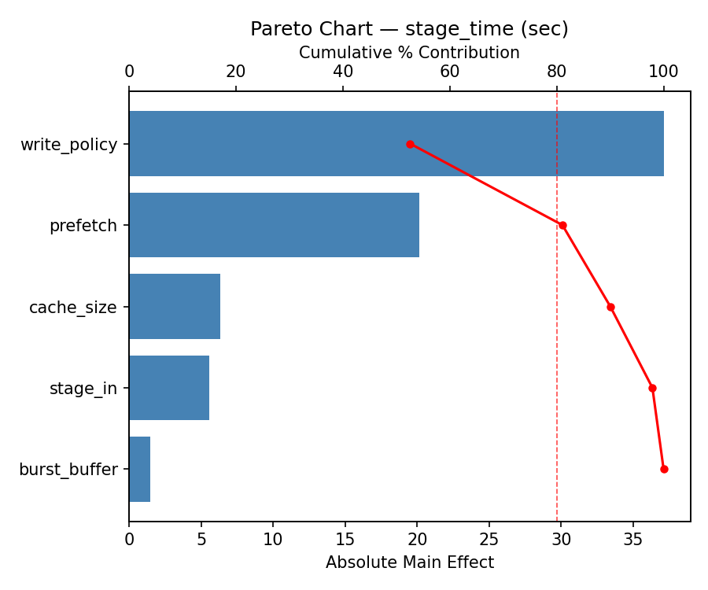
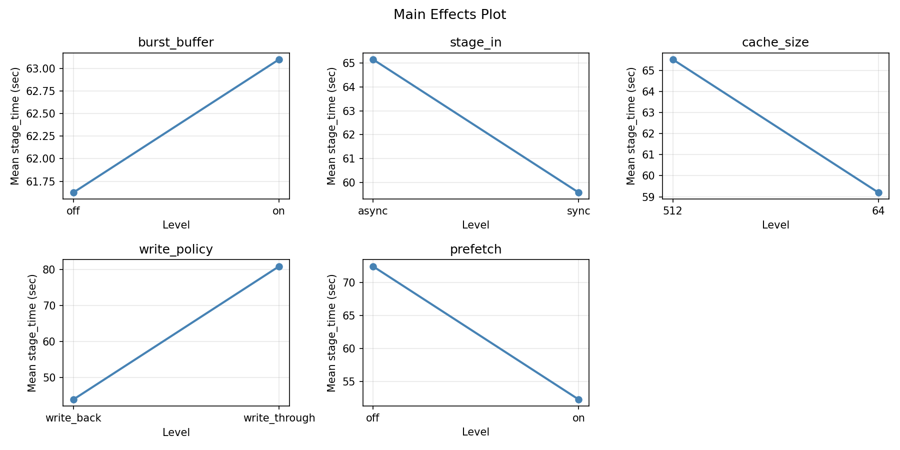

Experimental Setup
Factors
| Factor | Levels | Type | Unit |
|---|
burst_buffer | off, on | categorical | |
stage_in | sync, async | categorical | |
cache_size | 64, 512 | continuous | GB |
write_policy | write_back, write_through | categorical | |
prefetch | off, on | categorical | |
Fixed: none
Responses
| Response | Direction | Unit |
|---|
io_throughput | ↑ maximize | GB/s |
stage_time | ↑ maximize | sec |
Experimental Matrix
The Fractional Factorial Design produces 8 runs. Each row is one experiment with specific factor settings.
| Run | burst_buffer | stage_in | cache_size | write_policy | prefetch |
|---|
| 1 | off | async | 512 | write_back | off |
| 2 | on | sync | 64 | write_back | off |
| 3 | on | async | 64 | write_through | off |
| 4 | on | async | 512 | write_through | on |
| 5 | off | async | 64 | write_back | on |
| 6 | on | sync | 512 | write_back | on |
| 7 | off | sync | 64 | write_through | on |
| 8 | off | sync | 512 | write_through | off |
How to Run
$ python doe.py info --config use_cases/16_storage_tiering/config.json
$ python doe.py generate --config use_cases/16_storage_tiering/config.json --output results/run.sh --seed 42
$ bash results/run.sh
$ python doe.py analyze --config use_cases/16_storage_tiering/config.json
$ python doe.py optimize --config use_cases/16_storage_tiering/config.json
$ python doe.py report --config use_cases/16_storage_tiering/config.json --output report.html
Analysis Results
Generated from actual experiment runs.
Response: io_throughput
Pareto Chart

Main Effects Plot

Response: stage_time
Pareto Chart

Main Effects Plot

Full Analysis Output
=== Main Effects: io_throughput ===
Factor Effect Std Error % Contribution
--------------------------------------------------------------
burst_buffer 28.2275 5.9476 50.6%
stage_in 8.1625 5.9476 14.6%
prefetch 6.9125 5.9476 12.4%
cache_size -6.6025 5.9476 11.8%
write_policy 5.8975 5.9476 10.6%
=== Interaction Effects: io_throughput ===
Factor A Factor B Interaction % Contribution
------------------------------------------------------------------------
stage_in write_policy -28.2275 32.6%
cache_size prefetch -28.2275 32.6%
burst_buffer write_policy -8.1625 9.4%
burst_buffer cache_size -6.9125 8.0%
burst_buffer prefetch 6.6025 7.6%
burst_buffer stage_in -5.8975 6.8%
stage_in prefetch 0.7875 0.9%
cache_size write_policy 0.7875 0.9%
stage_in cache_size 0.5225 0.6%
write_policy prefetch 0.5225 0.6%
=== Summary Statistics: io_throughput ===
burst_buffer:
Level N Mean Std Min Max
------------------------------------------------------------
off 4 29.0000 8.1547 21.4700 36.8400
on 4 57.2275 7.9132 49.4700 65.2500
stage_in:
Level N Mean Std Min Max
------------------------------------------------------------
async 4 39.0325 20.4352 21.4700 62.7200
sync 4 47.1950 14.0817 35.2200 65.2500
cache_size:
Level N Mean Std Min Max
------------------------------------------------------------
512 4 46.4150 20.9706 22.4700 65.2500
64 4 39.8125 13.8377 21.4700 51.4700
write_policy:
Level N Mean Std Min Max
------------------------------------------------------------
write_back 4 40.1650 21.7537 21.4700 65.2500
write_through 4 46.0625 12.8023 35.2200 62.7200
prefetch:
Level N Mean Std Min Max
------------------------------------------------------------
off 4 39.6575 13.5514 22.4700 51.4700
on 4 46.5700 21.0907 21.4700 65.2500
=== Main Effects: stage_time ===
Factor Effect Std Error % Contribution
--------------------------------------------------------------
stage_in -42.1750 9.8030 45.7%
burst_buffer -18.0250 9.8030 19.5%
prefetch -15.0750 9.8030 16.3%
write_policy -8.8750 9.8030 9.6%
cache_size 8.1250 9.8030 8.8%
=== Interaction Effects: stage_time ===
Factor A Factor B Interaction % Contribution
------------------------------------------------------------------------
burst_buffer write_policy 42.1750 28.3%
stage_in write_policy 18.0250 12.1%
cache_size prefetch 18.0250 12.1%
burst_buffer cache_size 15.0750 10.1%
stage_in prefetch 13.3250 8.9%
cache_size write_policy 13.3250 8.9%
burst_buffer stage_in 8.8750 5.9%
burst_buffer prefetch -8.1250 5.4%
stage_in cache_size 6.1250 4.1%
write_policy prefetch 6.1250 4.1%
=== Summary Statistics: stage_time ===
burst_buffer:
Level N Mean Std Min Max
------------------------------------------------------------
off 4 71.3750 31.7947 39.6000 110.1000
on 4 53.3500 23.7975 28.7000 85.2000
stage_in:
Level N Mean Std Min Max
------------------------------------------------------------
async 4 83.4500 22.6139 54.8000 110.1000
sync 4 41.2750 9.8293 28.7000 52.1000
cache_size:
Level N Mean Std Min Max
------------------------------------------------------------
512 4 58.3000 36.1540 28.7000 110.1000
64 4 66.4250 21.0405 44.7000 85.2000
write_policy:
Level N Mean Std Min Max
------------------------------------------------------------
write_back 4 66.8000 36.9708 28.7000 110.1000
write_through 4 57.9250 19.3514 39.6000 85.2000
prefetch:
Level N Mean Std Min Max
------------------------------------------------------------
off 4 69.9000 33.6812 39.6000 110.1000
on 4 54.8250 22.5367 28.7000 83.7000
Optimization Recommendations
=== Optimization: io_throughput ===
Direction: maximize
Best observed run: #4
burst_buffer = off
stage_in = sync
cache_size = 512
write_policy = write_through
prefetch = off
Value: 65.25
RSM Model (linear, R² = 0.57):
Coefficients:
intercept: +43.1137
burst_buffer: +6.6063
stage_in: +7.3638
cache_size: +6.6138
write_policy: -0.0112
prefetch: -0.2388
Predicted optimum:
burst_buffer = on
stage_in = sync
cache_size = 512
write_policy = write_back
prefetch = on
Predicted value: 63.4700
Factor importance:
1. stage_in (effect: 14.7, contribution: 35.3%)
2. cache_size (effect: -13.2, contribution: 31.7%)
3. burst_buffer (effect: 13.2, contribution: 31.7%)
4. prefetch (effect: -0.5, contribution: 1.1%)
5. write_policy (effect: -0.0, contribution: 0.1%)
=== Optimization: stage_time ===
Direction: maximize
Best observed run: #8
burst_buffer = off
stage_in = sync
cache_size = 64
write_policy = write_through
prefetch = on
Value: 110.1
RSM Model (linear, R² = 0.35):
Coefficients:
intercept: +62.3625
burst_buffer: -6.2875
stage_in: -2.7875
cache_size: +0.7375
write_policy: +3.5375
prefetch: +13.1875
Predicted optimum:
burst_buffer = off
stage_in = sync
cache_size = 64
write_policy = write_through
prefetch = on
Predicted value: 81.8500
Factor importance:
1. prefetch (effect: 26.4, contribution: 49.7%)
2. burst_buffer (effect: -12.6, contribution: 23.7%)
3. write_policy (effect: 7.1, contribution: 13.3%)
4. stage_in (effect: -5.6, contribution: 10.5%)
5. cache_size (effect: -1.5, contribution: 2.8%)